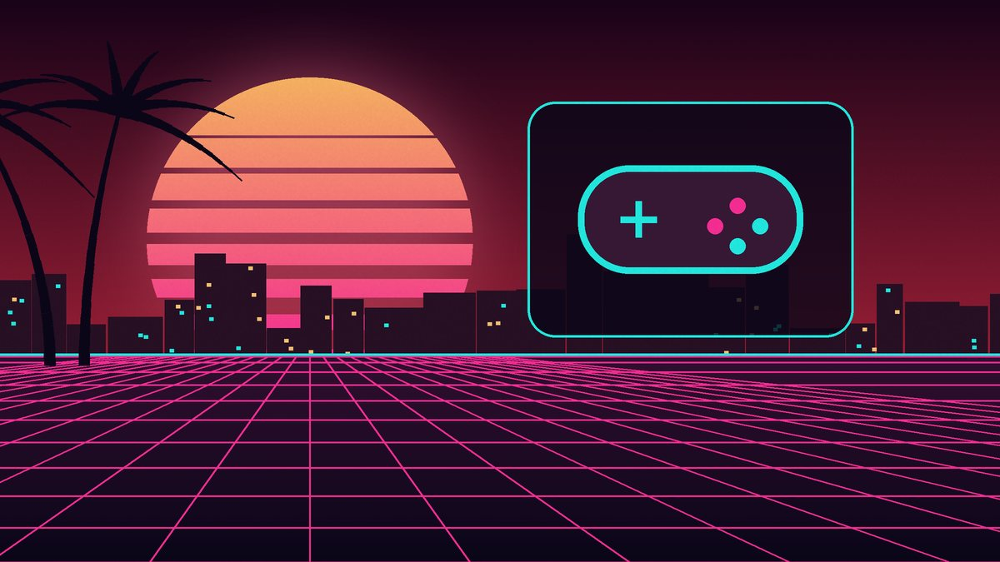

Cómo usar bien el Focus en GTA 6: cámara lenta, botín marcado y disparar sin matar
El Focus es la habilidad que más cambia un atraco en GTA 6, y el juego apenas la explica. Se activa pulsando los dos joysticks, fuera del combate no gasta barra y, apuntando, te dice en qué parte del cuerpo disparar para dejar a alguien fuera de juego sin matarlo.
Por Redacción Golpe Diario · Publicado el

Qué ha pasado
Se activa pulsando los dos joysticks a la vez: L3 y R3 en PlayStation, y los dos sticks también en Xbox, según la guía de GTA Base. Lo tienes a la vista en la barra morada del HUD, al lado de la vida y del aguante.
Sin arma en la mano es un modo detective y no gasta nada de barra. GTA Base explica que resalta lo que tienes alrededor, incluido lo que merece la pena robar durante un atraco, y que te señala la dirección de los ruidos raros. Red Bull añade que así se ven enemigos a través de las paredes, que los objetos con los que puedes interactuar salen en amarillo y el dinero en verde, y que las puertas blancas se abren mientras las rojas tienen alarma.
Con el arma apuntada la cosa cambia: el tiempo va a cámara lenta y la barra empieza a bajar, así que ahí sí hay reloj. A cambio, el Focus te pinta las zonas de tiro en el cuerpo del enemigo, en rojo las que matan y en amarillo las que no. Si le das en un brazo o en una pierna lo dejas fuera de combate sin matarlo, y eso te mantiene limpio el perfil criminal. También funciona con los coches, y marca el motor, el depósito y las ruedas.
Hay un detalle que cambia del todo los tiroteos con la policía: GTA Base recuerda que los agentes ya no aparecen en el minimapa como en los juegos anteriores, así que, con una orden de busca encima, el Focus es la única forma de saber por dónde andan.
La barra se puede alargar para siempre, y las guías coinciden en el tipo de actividad que la sube: lo que pide concentración. GTA Base nombra las galerías de tiro, el putt en el golf, el billar y la pesca, y Red Bull apunta que las subidas de vida y de aguante se pierden si dejas de entrenar, mientras que la de Focus se queda. PowerPyx da el método rápido: en el Rodgers Ranch & Shooting Range, en Kelly County, al noreste de Port Gellhorn, se compra el pase de 5 $ y se repite el reto Market Range en nivel principiante, que se despacha en unos cinco segundos. Al acabar se sale con Quit, se vuelve a empezar y cada vuelta sube un poco el Focus.
Para recargarla en el momento, GTA Base nombra el café y el té, dormir en tu casa y lavarte la cara en el lavabo o en la ducha, y señala la adrenalina como el empujón más fuerte, porque llena la barra y encima hace que baje más despacio. Red Bull suma un truco de los primeros minutos: dar de comer a Dolores, la serpiente de Jason. Y según tu perfil criminal se rellena de maneras distintas: con el profesional la llenan los golpes no letales y portarse bien con la gente, y con el violento, los tiros a la cabeza.
Qué significa para ti
- Antes de entrar a robar, actívalo sin arma: no gasta barra y te marca el botín de la casa.
- Si quieres cobrar sin ensuciarte el perfil criminal, dispara a las zonas amarillas.
- Sube el Focus en la galería de tiro antes de los golpes grandes: cuanto más larga la barra, más tiempo de cámara lenta.
- Con la policía encima, el Focus hace de minimapa, porque los agentes ya no salen en él.
Lo tienes también en la guía: Primeros pasos en GTA 6: lo que conviene saber antes de empezar · Cómo ganar dinero en GTA 6 · Armas de GTA 6: las únicas, dónde conseguirlas y en qué orden · Secretos y easter eggs de GTA 6: dónde están y cómo llegar · Trucos y consejos para el modo historia de GTA 6 · Trucos y consejos para el modo historia de GTA 6
Contrastado con: GTA Base · PowerPyx · Red Bull
Sigue leyendo
Los aviones y helicópteros de GTA 6: lista completa y cómo pilotarlos
Rockstar no ha publicado una lista oficial, pero la base de datos de la comunidad ya cuenta diez aviones y nueve helicópteros, y una guía explica paso a paso cómo despegar, volar y aterrizar con cada uno.
El código de la caja fuerte de Avery Pawn Shop cambia en cada partida, y así lo consigues
A diferencia de otros candados de Leonida, la combinación de la caja fuerte de este atraco no es siempre la misma: hay que sacársela a un empleado durante el propio golpe, o buscar la nota de repuesto.
La caja fuerte de Chatfield Storage se abre con 5800, y hay más códigos que no piden pista
En Waxman Island hay un almacén con una caja fuerte, una pistola única y un superdeportivo morado. El código es 5800, y no es el único candado de Leonida que se abre sin tener que buscar la combinación.